This script is read aloud during the oral presentation and the judges' interview. Orange boxes are stage cues (slide to show, action, timing); text inside the blue rule is what the presenter says. Numbers come from the research paper; every result is from the simulated benchmark SBD-300 and must be described that way.
| Part | Content | Time | Slides |
|---|---|---|---|
| 1 | Opening | 0:45 | Title |
| 2 | Rationale: the problem and the gaps | 1:30 | Background, gaps |
| 3 | What BUHAY-AH is: objective and research questions | 1:00 | Objective |
| 4 | How Mathematical and Computational Sciences built it | 4:00 | Framework, methods |
| 5 | Results by research question | 2:30 | Findings |
| 6 | SDGs, significance and limits | 1:00 | Impact |
| 7 | Conclusion and closing | 0:45 | Conclusion |
| Total | 11:30 |
Also included: anticipated judges' questions with answers, a 2-minute video explainer script, and a one-page equation sheet.
Good day, honorable judges. I am Enrique Miguel C. Buban, and this is BUHAY-AH.
Every peso padded into a public building is a classroom that does not get built, a clinic bed that does not exist, a bridge that is thinner than it should be. In 2025, a newly opened 1.2-billion-peso bridge in Isabela collapsed less than a month after completion. The question behind this research is simple: before a contract is signed, can anyone tell what a building or bridge should really cost?
BUHAY-AH answers that question with mathematics. Give it a plan, and it prices it the way an engineer would. Give it only a budget, and it designs the largest facility that budget can honestly build. Give it a contract amount, and it tells you whether that price is defensible.
Construction is one of the sectors most exposed to corruption worldwide; the Infrastructure Transparency Initiative estimates that 10 to 30 percent of investment in publicly funded infrastructure is lost to corruption, mismanagement and inefficiency.
The Philippines shows the same pattern. In the 2025 Corruption Perceptions Index, the country scored 32 out of 100 and ranked 120th of 182. In August 2025 it was reported that about 20 percent of 545.64 billion pesos in flood-control projects went to only 15 contractors, and an Independent Commission for Infrastructure was created to investigate. In Cebu City, the Commission on Audit found the Cebu City Medical Center building overstated by about 62.64 million pesos, partly because value-added tax was computed at 12 percent instead of the 5 percent the DPWH rule prescribes. That is not a hidden deal. That is arithmetic that nobody checked.
My earlier study, CORA, screened road contracts with machine learning. Building on it, I found five gaps.
BUHAY-AH was built to close all five.
BUHAY-AH stands for Buildings-and-Bridges Unit-cost Hybrid Analytics and Yardstick for Accountable and Honest infrastructure. Buhay means life, because public infrastructure carries lives.
This study aimed to develop BUHAY-AH, a budget-to-blueprint design generator, standards-based quantity take-off and hybrid machine-learning system that produces start quotations and detects over-budgeted public buildings and bridges in Bicol Region V. Specifically, it sought to answer six questions:
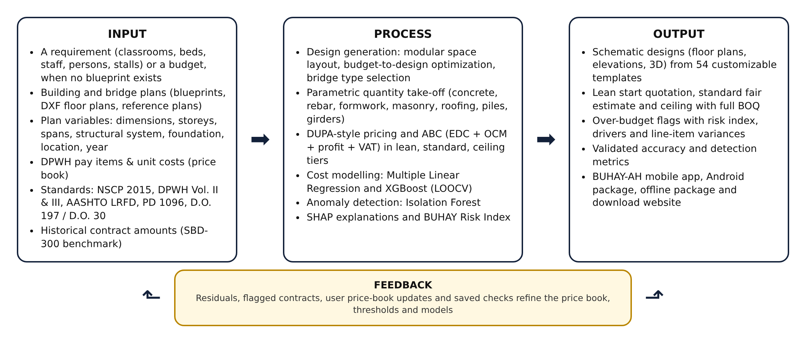
This is a Mathematical and Computational Sciences study because every part of BUHAY-AH is a mathematical model that a computer evaluates. There is no survey and no experiment on people. The problem was expressed as mathematics, solved as algorithms, and validated with statistics. Four kinds of mathematics work together: deterministic modeling to compute cost from standards, combinatorial optimization to design from a budget, statistical and machine learning to learn from past projects and detect outliers, and simulation to build a benchmark where the truth is known.
| MCS discipline | Where it is used in BUHAY-AH | What it produces |
|---|---|---|
| Geometry and measurement | Shoelace area and perimeter of DXF outlines; footprint, wall, slab and girder geometry | Plan variables from a drawing |
| Deterministic mathematical modeling | Quantity take-off under NSCP 2015, DPWH and AASHTO; footing sizing; reinforcement intensities | Itemized bill of quantities |
| Linear algebra and arithmetic of prices | EDC as a weighted sum of quantities and unit costs; ABC with OCM, profit and VAT | Lean, standard and ceiling quotations |
| Combinatorial optimization | Packing space modules into rows and floors; budget-to-design integer program; Pareto filter; bridge type and span selection | Designs that fit a budget |
| Statistics | Multiple Linear Regression, VIF, t-tests, LOOCV, RMSE, MAPE, R² | Interpretable cost model |
| Machine learning | XGBoost regularized gradient boosting on log cost | Expected cost from history |
| Probability and anomaly detection | Isolation Forest path length and harmonic numbers | Anomaly score |
| Cooperative game theory | Shapley values computed exactly by TreeSHAP | Why a price is high |
| Monte Carlo simulation | SBD-300 benchmark with hidden variation and injected overpricing | Ground truth for testing |
| Computational science | Algorithms, complexity, floating-point parity, offline web and Android deployment | A phone app anyone can use |
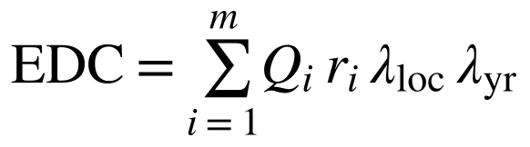
Estimated direct cost: quantity × unit rate × location factor × year index, summed over all pay items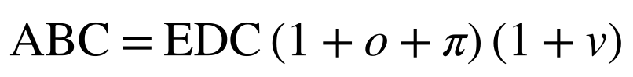
Approved Budget for the Contract: OCM o, profit π, and 5% VAT v per DPWH D.O. 197 s. 2016 / D.O. 30 s. 2025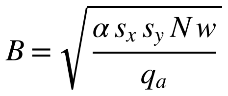
Footing width from tributary area, storeys, service load and allowable soil bearing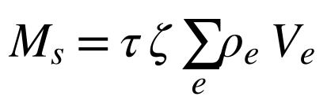
Reinforcing steel mass from element volumes and intensities, scaled by tier and seismic zone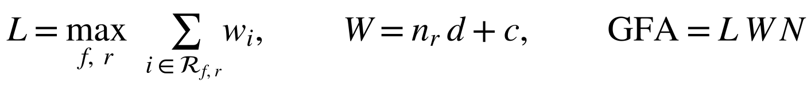
Layout: longest row sets length L; rows and corridor set width W; GFA = L × W × N storeys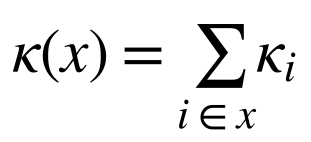
Capacity is the sum of the capacities of the modules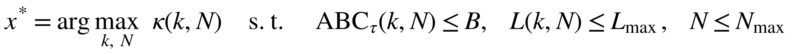
Budget-to-design integer program over capacity step k and storeys N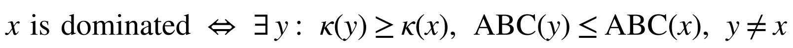
Pareto dominance: keep only designs no other design beats on both capacity and cost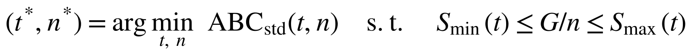
Bridge selection: cheapest superstructure type t and span count n whose span fits the type's range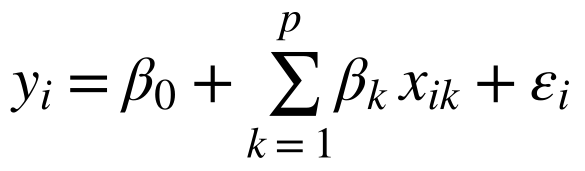
Multiple Linear Regression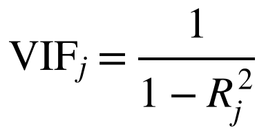
Variance Inflation Factor; predictors with VIF above 10 were removed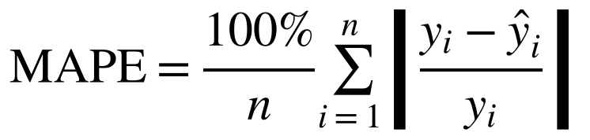
Mean absolute percentage error, with RMSE and R² as companions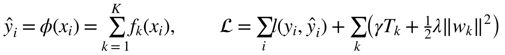
Additive tree ensemble and regularized objective (Chen & Guestrin, 2016)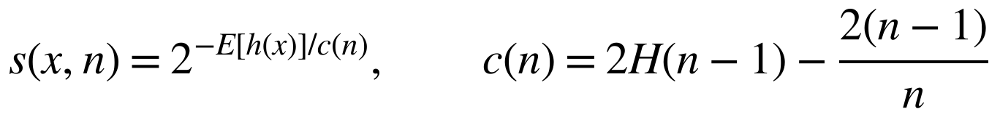
Anomaly score from expected path length, normalized with the harmonic number H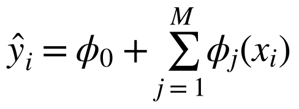
Additive feature attribution: base value plus one contribution per feature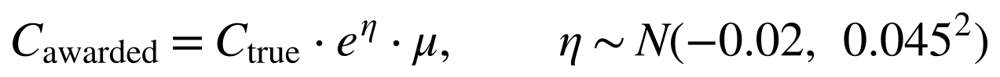
Awarded cost = true cost × lognormal bid competition × markup μ (μ > 1 in injected cases)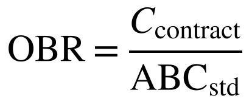
Over-Budget Ratio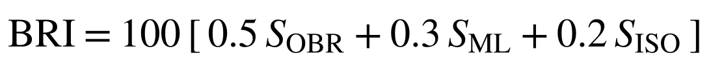
BUHAY-AH Risk Index; 30 or more is flagged, 20 to 30 is for review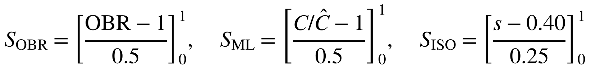
Each signal is scaled and clipped to [0, 1]Math.fround restored parity to 1 × 10⁻⁵. Floating-point arithmetic is part of the mathematics.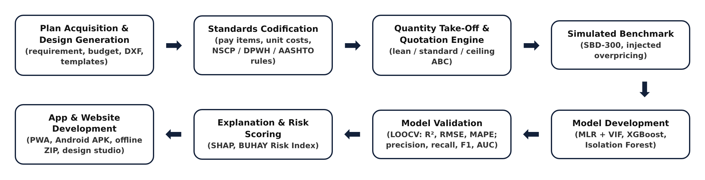
Nine variables describe a building: gross floor area, footprint, storeys, structural span, floor height, facility type, roof system, location factor and cost index. Eleven describe a bridge: total length, deck width, deck area, span length, pier and abutment heights, superstructure and foundation types, pile length, location and cost index. All can be read from a plan, a DXF file or a design the app generates. In the benchmark, buildings ranged from ₱5.37 million to ₱56.77 million and bridges from ₱1.00 million to ₱179.23 million.
From 55 space modules the generator produced 41 building templates and 13 bridge templates, from a 149-square-metre barangay health station to a 3,024-square-metre multi-storey facility. A 2-storey 6-classroom school comes out 38.5 by 9.5 metres with 732 square metres of floor, a lean start quotation of ₱16.25 million and a standard estimate of ₱18.77 million. All 152 applicable checks, classroom size, corridor width, stairs and exits per floor, toilets with PWD cubicles, evacuation living space and natural light, passed. With ₱10 million, the solver returns a 4-classroom school; with ₱25 million, 9 classrooms in 2 storeys; with ₱50 million, 15 classrooms in 4 storeys. Allowing multi-storey designs added an average of 6.4 and up to 10 classrooms for the same budget. For bridges, culverts were cheapest up to 12 metres and multi-span RC deck girders from 20 to 120 metres.
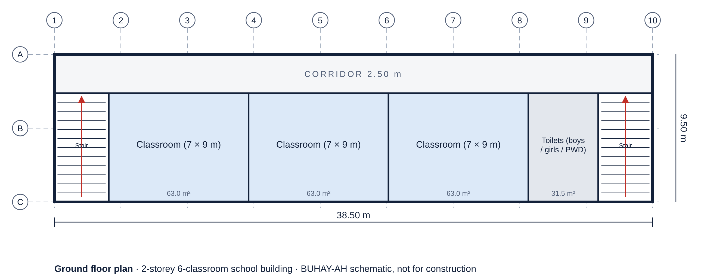
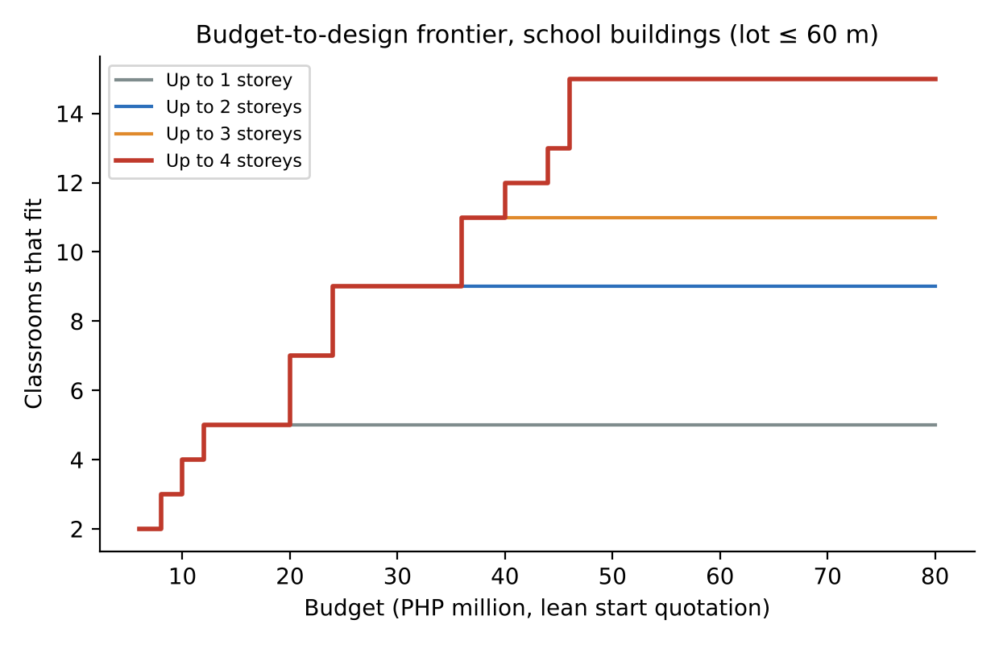
Against the fair awarded costs, the standard estimate reached a MAPE of 5.21 percent for buildings and 7.67 percent for bridges, with R² of 0.9799 and 0.9801. That is less than half the error of the best data-driven model. The lean start quotation was at or below the fair awarded cost for 94.3 percent of buildings and 81.5 percent of bridges, about 14.4 and 5.9 percent below standard, and the ceiling covered 100 percent of fair buildings and 88.7 percent of fair bridges.
| Model (LOOCV) | Buildings R² | Buildings MAPE | Bridges R² | Bridges MAPE |
|---|---|---|---|---|
| Multiple Linear Regression | 0.8112 | 13.43% | 0.8640 | 65.65% |
| XGBoost | 0.7874 | 13.94% | 0.8630 | 19.18% |
For buildings, regression was as good as XGBoost because cost is close to linear in floor area. For bridges, XGBoost cut the error from 65.65 to 19.18 percent, because a bridge's cost depends on interactions: once the tree knows the bridge is a culvert, a girder or a truss, length and piles tell the rest. SHAP confirmed that gross floor area drives building cost and deck area, pile length and total length drive bridge cost.
| Signal (all 300 projects) | Precision | Recall | F1 | AUC |
|---|---|---|---|---|
| Standards-based rule (above ceiling) | 0.682 | 0.833 | 0.750 | 0.994 |
| XGBoost residual (> 1.25 × predicted) | 0.706 | 0.667 | 0.686 | 0.955 |
| Isolation Forest (CORA-style) | 0.556 | 0.278 | 0.370 | 0.731 |
| BUHAY-AH Risk Index (≥ 30) | 0.642 | 0.944 | 0.764 | 0.987 |
The Risk Index caught 34 of 36 padded contracts. The Isolation Forest alone caught only 27.8 percent, which proves the validation gap was real: a padded ordinary building looks normal unless you know what it should cost. For buildings alone the index reached an F1 of 0.927. Most false alarms were bridges with pile lengths longer than planned, which is why the paper recommends site geotechnical data before a bridge is flagged.
BUHAY-AH runs as an installable offline app with five screens: Home, Design, Quote, Check and Library. It produces floor plans, elevations, 3D models, bills of quantities, quotations, line-item checks of a contractor's BOQ, and SHAP explanations. It is distributed as an Android package, an offline ZIP and a download website.
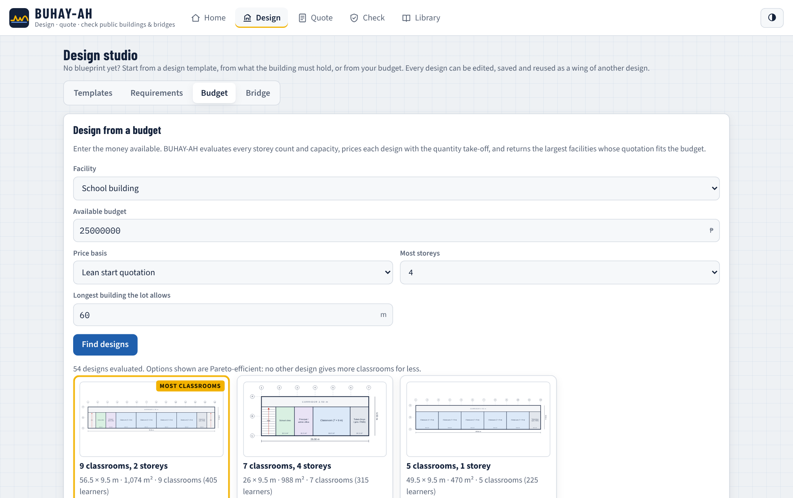
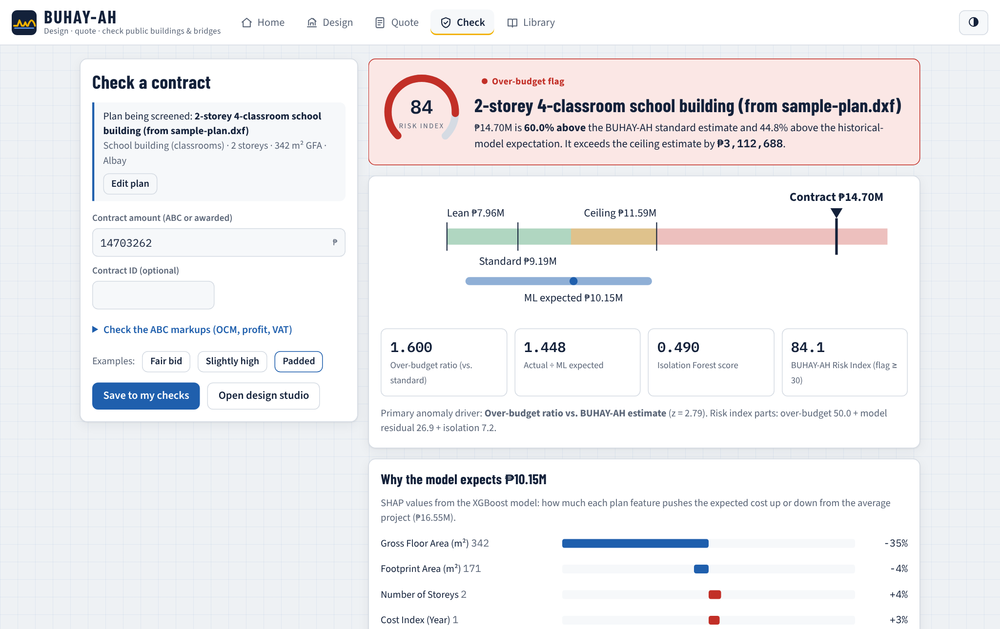
SDG 16.5, 16.6 and 16.10: substantially reduce corruption and bribery, build accountable institutions and ensure public access to information. SDG 9.1 and 11.5: fair prices protect the quality of resilient infrastructure in a typhoon- and earthquake-prone region. SDG 12.7: sustainable public procurement under Republic Act 12009. SDG 4.a: every peso saved on a school building becomes more classrooms.
District engineering offices can cross-check their own estimates. The COA, the Ombudsman and the Independent Commission for Infrastructure can rank contracts by risk. Schools, health offices and barangays can get a design and a price from just a need and a budget. Honest contractors get a public reference that defends a fair bid. Citizens and journalists get a calculator in their pocket.
I also want to be clear about the limits. The accuracy and detection results come from a simulated benchmark built under stated assumptions; they must be re-validated on actual DPWH contracts. Generated designs are schematic and for estimating only; they must be developed and signed by licensed architects and engineers. And a flag is a reason to review, never proof of wrongdoing.
BUHAY-AH shows that mathematics can stand between a budget and a padded price. Deterministic models priced plans within about 5 to 8 percent of fair cost. Optimization turned a budget into the largest honest design in milliseconds. Statistics and machine learning learned from history, game theory explained every prediction, and simulation proved that a standards-based reference catches what anomaly detection alone misses: 94.4 percent of padded contracts against 27.8 percent.
The recommendations are direct: validate on actual contracts, review the template library with licensed professionals, add geotechnical data for bridges, connect current price data, and pilot the tool with oversight bodies.
A building should be priced by what it needs, not by who builds it. With BUHAY-AH, anyone with a plan, or only a budget, can know what is fair. Thank you.
1. Why is this a Mathematical and Computational Sciences project and not engineering or social science?
The contribution is the mathematics and the algorithms: a deterministic cost model, an integer program with a Pareto filter, statistical and machine-learning models, an anomaly detector, Shapley-value explanations and a Monte Carlo benchmark, all implemented and validated computationally. No human participants or physical experiments are involved.
2. Your data are simulated. How do we know it works on real contracts?
We do not claim that yet. Itemized bills of quantities for awarded DPWH buildings and bridges are not publicly available in machine-readable form, and recall cannot be measured without known overpricing. The benchmark tests the method where the truth is known; the first recommendation is validation on actual contracts. The cost engine itself uses real DPWH pay items and real code provisions.
3. Isn't the standards engine just recovering its own numbers?
No. Each benchmark project carries hidden variation the plan does not show: unit prices ±7%, reinforcement ±10%, concrete ±6%, MEPF ±8%, earthworks, and pile lengths up to 35% longer than planned. That is why bridge error is higher and why most false alarms are bridges.
4. Why not use binary search for the budget-to-design problem?
Because cost is not monotonic in capacity. One more classroom can force a new floor, an extra stair or bigger footings, so a budget that cannot afford k classrooms might afford k + 1 in a different layout. Exhaustive enumeration is exact; the largest search evaluated 604 complete designs and still finished in 37 milliseconds or less.
5. Why did regression fail on bridges?
Bridge cost depends on interactions: a 10-metre culvert and a 10-metre girder bridge cost very differently. A linear model adds effects; tree ensembles split by type first. The 65.65% MAPE comes mostly from over-predicting small culverts.
6. How were the Risk Index weights chosen?
By design priority: the over-budget ratio gets 0.5 because it does not inherit past padding; the XGBoost residual 0.3; the Isolation Forest 0.2. Thresholds of 30 (flag) and 20 (review) were set before testing; the paper recommends calibrating them per asset class once real cases are confirmed.
7. What is the start quotation, and is it too low to be safe?
It is the lowest code-compliant price: NSCP minimum reinforcement and basic finishes, while keeping every NSCP, DPWH and PD 1096 requirement. It is a starting point for estimating, not a structural design.
8. Can the generated designs be built?
They are schematic designs for estimating and planning. They satisfy space standards such as classroom size, corridor width, exits, toilets and PWD access, but must be developed and signed by licensed architects and engineers.
9. How is SHAP computed on a phone?
The exact TreeSHAP algorithm was ported to JavaScript and runs on the exported trees. Its output matches the Python reference within 1 × 10⁻⁵.
10. What happens if a flag is wrong?
A flag is a reason to look, never an accusation. The app shows the drivers, the line items above the price book, and reminds the user that a flag calls for review by the implementing office, the COA, the Ombudsman or the ICI.
11. How is this different from your earlier study, CORA?
CORA screened roads using past prices and an Isolation Forest. BUHAY-AH covers buildings and bridges, adds a standards-based reference price, generates designs from budgets, and validates detection where overpricing is known. CORA-style isolation alone caught 27.8% of padded contracts; the Risk Index caught 94.4%.
12. Can a local government use its own prices?
Yes. The price book is editable in the Library screen, and every design and quotation follows the new rates immediately.
| Time | Visual | Narration |
|---|---|---|
| 0:00–0:12 | News headlines: collapsed bridge, flood-control audit | A 1.2-billion-peso bridge collapsed a month after it opened. Billions in flood-control funds are under investigation. Before a contract is signed, who checks the price? |
| 0:12–0:25 | BUHAY-AH logo, app on a phone | This is BUHAY-AH: an app that designs, prices and checks public buildings and bridges, built with Mathematical and Computational Sciences. |
| 0:25–0:45 | Design screen: budget slider, cards appear | Type a budget. An optimization algorithm searches every design from 55 standard space modules and returns the largest school, clinic or evacuation center it can honestly build, in milliseconds. |
| 0:45–1:05 | Quote screen: three tiers, BOQ table | Give it a plan, and a quantity take-off under the National Structural Code and DPWH pay items builds the bill of quantities and three prices: a lean start quotation, a standard fair estimate and a ceiling. |
| 1:05–1:25 | Check screen: gauge to red, SHAP bars | Enter a contract amount. Regression, XGBoost, an Isolation Forest and Shapley values from game theory combine into one risk index, and explain why a price looks high. |
| 1:25–1:45 | Result tiles: 5.21%, 94.4%, 3.6 ms | On a 300-project simulated benchmark, the standard estimate was within 5.21 percent for buildings, and the risk index caught 94.4 percent of padded contracts. |
| 1:45–2:00 | SDG 16 tile, download page | For SDG 16 and every community that deserves what it paid for. BUHAY-AH: design it, price it, keep it honest. |
| Model | Equation |
|---|---|
| Estimated direct cost | |
| Approved Budget for the Contract | |
| Footing width | |
| Reinforcing steel | |
| Layout and floor area | |
| Budget-to-design program | |
| Pareto dominance | |
| Bridge type and spans | |
| Over-budget ratio | |
| Simulated awarded cost | |
| Multiple Linear Regression | |
| Variance Inflation Factor | |
| XGBoost | |
| Isolation Forest | |
| SHAP | |
| BUHAY-AH Risk Index | |
| Signal scaling | |
| RMSE | 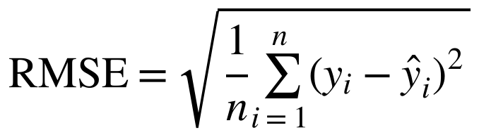 |
| Coefficient of determination | 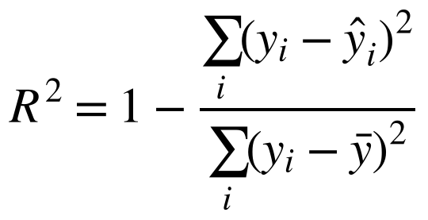 |
| MAPE | |
| Precision, recall, F1 | 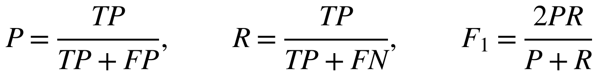 |
All results in this script are from the simulated benchmark SBD-300 described in the research paper. The full paper, the app and the code are in the BUHAY-AH repository.